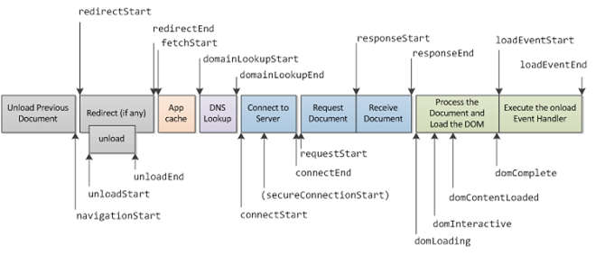
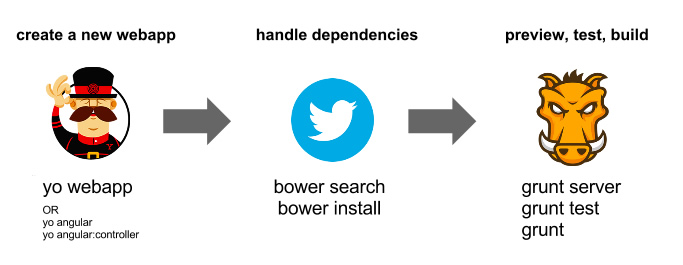

Web Optimization
Harder Better FASTER Stronger
Web Optimization
Make the web faster!
Bandwitch vs Latency
HOW MUCH IS FAST?
- Delay User reaction
-
0 - 100 ms
Instant
-
100 - 300 ms
Feels sluggish
-
300 - 1000 ms
Machine is working...
-
1 s+
Mental context switch
-
10 s+
I'll come back later...
Why?
-
Better user experience
- Reduce bounce rate
- Performance is a feature
Where to begin?

DNS
DNS
-
Poorly maintained
-
Unreliable
-
DDOS
-
High latency (130ms)
- Reduce lookup
-
Google DNS
-
Namebench, DNSStuff, ...
- ISP
- Site provider
SERVer
server
Cache
static resources (favicon?)
Proxy
e-tag headers
Gzip
Avoid redirects
Flush early, flush often
resources
resources
HTML
HTML
-
Reduce DOM tree
-
Minimize DOM
-
Avoid iframes
-
Declare CSS in headers
-
Declare JS before </body>
- async directive for JS
CSS
CSS
-
Avoid CSS inline
-
Avoid CSS expressions
-
Avoid vendor specific filters
-
Avoid image resizing
-
Avoid imports
-
Avoid complex selectors
- Concat CSS files
JavaScript
javascript
-
Minimize scripts
-
Concat scripts
-
Minimize DOM access
-
Cache styles properties
-
Zombies views! huhu
Tooling
WEBAPP

WEBAPP

-
Test runner
-
CSS, JS, images optimizer
-
WebApp builder
-
Cache declaration/invalidator
PROFILLING & ANALySiS
MOBILE
The "little" big challenge
THE MOBILE CHALLENGE
- Contradictory
- Infrastructure
- Widely used
-
Device jungle
SOME TECHNIQUES
-
Identify the "Critical Path"
-
CSS, JS inline...(oh! really?)
- Optimize images
Methodologies
-
Responsive Web Desing (RWD)
-
Mobile first
-
Dedicated mobile site
-
RESS
CONCLUSION
-
Speed matters
-
Track metrics
-
Focus on Front-End (JS)
-
Follow best practices
-
Use dev, automation &
analysis
tools
THANKS!
made with reveal.js